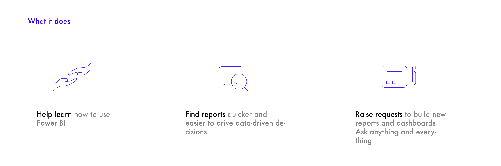
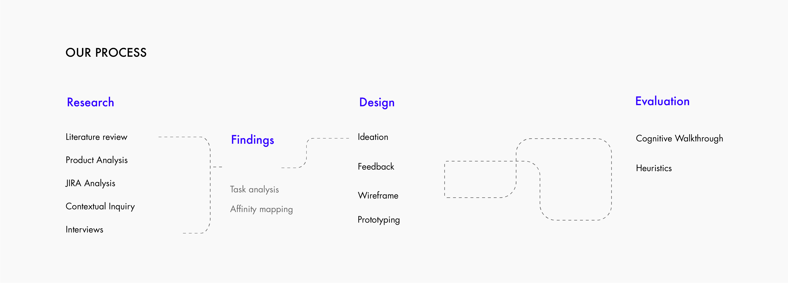
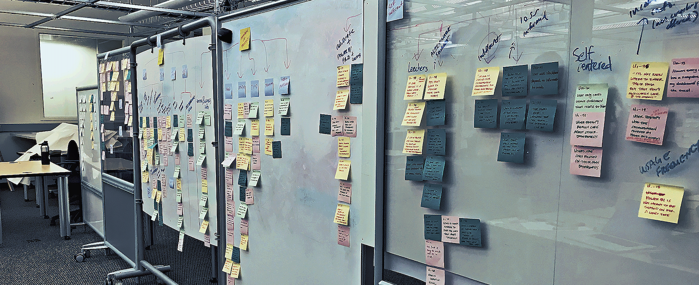
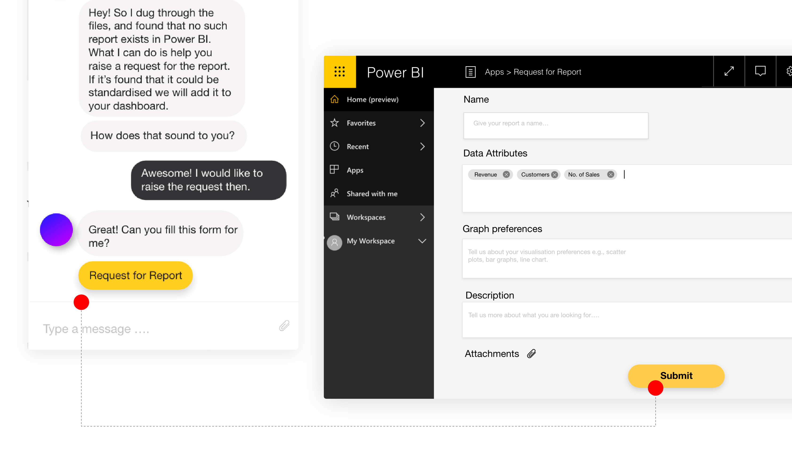

Focus Brands | Intelligent Assistant
Research and Product Design | Aug'18-Dec'18
Miyeon Bae, Yvonne, Johnny & Pragati
Overview
Premise
FOCUS Brands is a leading food-services global franchisor headquartered in Atlanta, Georgia. Currently, they own Schlotzsky's, Carvel, Cinnabon, Moe's Southwest Grill, McAlister's Deli, and Auntie Anne's brands. With the advent of big data and the digital revolution, it has become imperative for businesses across the world to venture into data science and data analytics for decision-making in their day-to-day activities and future planning. With the vision of making data-driven business decisions and planning, FOCUS Brands recently established its Business Intelligence (BI) department. Since BI is a relatively new concept in FOCUS Brands, the company is facing difficulty in increasing the adoption by its employees. They wanted us to help them find the reason behind the low adoption and suggest a possible solution to address the issue.
Research Question
What are the root causes behind the low adoption of Power BI by FOCUS Brand’s employees?
Design Goal
How can we help FOCUS Brand employees better use the capabilities of Power BI and make data-driven decisions for their respective work domains?
My Role
Researcher and Interaction Designer
Our Solution
We proposed a chatbot style intelligent analyst that would cater to the user's designation and help them find data/ insight they need for decision-making. The intelligent analyst will be a rule based bot which will map the department and user requirements to responses. The solution was based in our findings that most users struggling with Power BI were non-technical users who have spent quite a lot of time in the industry and have been taking decisions based on their experience rather data.


Research
Preliminary Research
For our first phase of research activity, our goal was to understand the product, determine the context, identify target user groups, and the user needs. Our focus was on how to achieve these goals and identify the potential
intervention points, and determine the scope of the project.
We wanted to set precedents for further investigation and acquaint ourselves with the existing
situation in FOCUS Brands.
Literature review
Then we studied extant literature on BI dashboards and their related principles.We studied Microsoft articles on how one can help improve the adoption, depending on the business context and the organization.We studied the current issues inhibiting enterprise wise data-driven decisions.

Stakeholder Interviews
The first round of interaction with our stakeholders helped us develop a hypothesis around the issue behind low adoption rate. These interviews helped us understand the context, organization, and expectation of the stakeholders. This also gave us cues for our further research and guided the inquiry into potential issues. We spoke to the BI Head of FOCUS Brands and got to understand their side of the story of implementation and issues.

From our meeting with the BI head and other top leaders, we also found about our user groups and the organizational structure.

Product Analysis
Before we could do interviews or contextual inquiry, we wanted to educate ourselves first with the product. With the literature review at hand, we dived into product analysis.
Customer Support Analysis
After we had an understanding of the product, what it is supposed to do, what not we wanted to know how much it satisfied the expectations of the business users. We requested FOCUS Brands to share the customer support questions. They provided us with some of their JIRA snapshots.

Understanding the User
One of the biggest challenges with implementing and customizing products used at enterprise level within an organization is that they are designed to cater a wide variety of industries with drastically different contexts. Although Power BI is adaptable and customizable, in-house implementations require thorough understanding of their own employees, needs, goals, motivations, struggles, and so on. This includes understanding their:
A series of research methods were deployed to gain more insights on the contexts and needs of the employees at FOCUS Brands. Following is the overview of our methodologies to inform design.
Contextual-inquiry & Interviews
Contextual inquiry was conducted in our first on-site meeting at FOCUS Brands; consequently, it was our first time observing the real users of the dashboards. We gained concrete information of what was happening from the user’s perspectives – instead of hypothesizing from second-hand narrative.

Affinity Mapping & Research Findings
Analysis & Findings
User Needs, Other Influences & Design Implications
Drawing from the affinity mapping, we fleshed out our design implications as follows. On the basis of the affinity mapping we also derived our user groups.

Ideation & Design
Sketches and Feedback
Building on our findings, and above listed personas, we targeted the second two as they were the reason behind low adoption of Power BI and people who needed most hand holding. We brainstormed our ideas and issues that we were addressing. We had three major ideas : first- UI improvements in the Power BI, second - a bulletin board, and third - an intelligent analyst inspired by Cortana.

Then we conducted an online feedback session with people from the respective user groups. We found the following insights that informed choosing chat-bot idea over other concepts.
- the user group was non-technical people and inclined more towards the chat-bot idea as they didn't want to spend time learning Power BI without any background in analytics.
- users wanted hand holding and spend less time creating insights. Th Power BI dashboard was an extra burden for their respective jobs.
- a solution which utilised the data analytics capabilities of the BI team to help the rest of the employees, would make sure everyone's time is utilised better.
- 4 of our interviewees had no idea about Power BI and they relied on their colleagues for help. An intelligent analyst could be a way to build and reuse the knowledge being shared and asked again and again.
- 3 of our six interviewees said that, although they do seek help, they don't prefer it as they feel like disturbing their colleagues.
Designing the Intelligent Analyst
We decided to make an AI through a rule based technique which would be faster and replicate the human-human interaction better.

Based on our research, we fleshed out the conversation flow catering to the scenarios where FOCUS Brand employees needed help.

Wireframes

Scenario -1 : The user knows exactly what they want.
Scenario - 2 : Power BI does not have what the user wants and prompts them to raise a request.
Scenario - 3 : Notifications about new reports or data-updates
Evaluation Activities
Two rounds of testing were conducted to evaluate the final product of the research project. The first round was done with three expert evaluators, and the second round was done with our actual users: the employees at FOCUS Brands.
Heuristics Evaluations
Our primary goal for conducting heuristic evaluations was to know how well the design abided to the 10 major design guidelines. Meanwhile, this approach allowed us to identify potential areas of problems early on before presenting the prototype to real users during the following user testing.
We were able to recruit 3 experts, and each of them had over 3 years of experience in usability-related fields. We conducted the evaluations separately, so one participant was moderated by one of the group members per session.

Results
Throughout the analysis process, we saw a couple of patterns regarding potential issues in our system. Improvements will be further outlined in the next section. First, users were confused about certain interactions, and they had difficulties imagining the scenarios/cases with the pre-programmed instances that we gave them. This may be because the participants were not our target users at all and because they were completely unfamiliar with Power BI. Second, users suggested adding more features to help with the querying process. For example, when the user asks questions, the Intelligent Analyst should be able to auto-fill the sentences based on its existing database. Third, although most of their feedback were positive, users were still skeptical about the technology and had issues imagining the capabilities that we were trying to convey with the concept.
Lessons Learned
• Designing for employees sometimes can be more than just the interface or the product, it is designing in the framework of a socio-technical system, which in result makes us account for external factors like politics, culture, hierarchical relationships, motivations etc.
• Even though we provided precedents, guidance, and clarifications throughout presentations and testing, evaluators and users still had trouble fully imagining the capabilities of the Intelligent Analyst - but we believe that is just the consequence of creating a high-level, futuristic concept.
• We learned that working with real clients will always have wild-cards thrown in from time to time - this happened with regards to scheduling our visit with FOCUS Brands.